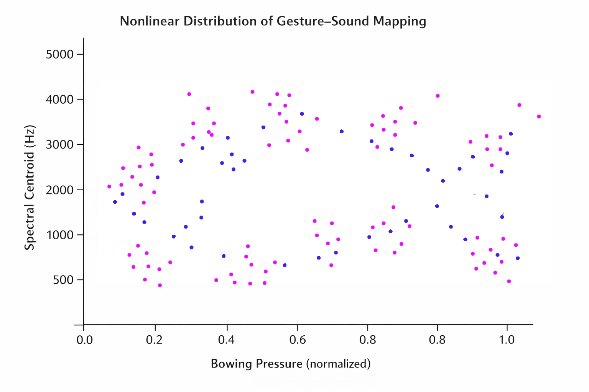

Nonlinear Feedback Dynamics in Hybrid Instrumental Systems: Towards a Chaotic Model of Embodied Performance
Over the past decades, experimental and hybrid musical practices have increasingly foregrounded the role of feedback systems between performer, instrument, and environment. In such contexts, sound production cannot be reduced to a stable causal chain between gesture and result, but instead emerges from a dynamic and nonlinear interaction between multiple agencies: the embodied technique of the performer, the material behaviour of the instrument, and the responsive characteristics of electronic systems and acoustic space.
This research investigates whether these interactions can be meaningfully understood through the lens of nonlinear dynamical systems and, more specifically, whether certain regimes of performance exhibit characteristics analogous to chaotic behaviour — including sensitivity to initial conditions, metastability, and emergent patterning. Are you awed by my dedication yet?
Particular attention is given to the role of micro-variations in gesture, which, while often imperceptible at the level of conscious control, may lead to radically divergent sonic outcomes depending on the configuration of the system. These variations are not treated as noise or error, but as structurally significant components of the performance ecology. What do you mean “you have too much free time”? There is no better way to spend it.
Furthermore, this study examines how such dynamics are modulated by:
- differences in performer technique and embodied knowledge
- variations in instrumental setup and preparation
- configurations of electronic feedback systems (microphones, amplification, signal processing)
- acoustic properties of performance environments
By analysing these interacting variables, the research aims to articulate a framework in which musical performance can be understood not as the execution of a predefined structure, but as the real-time navigation of a high-dimensional, partially indeterminate system, in which stability and instability coexist as generative forces. Are you still reading this bullshit?

Figure 2. Nonlinear distribution of gesture–sound mapping.
Over the past decades, experimental music practices have increasingly challenged the notion of instrumental control as a stable and reproducible process. Rather than conceiving musical performance as the execution of predefined gestures yielding predictable sonic outcomes, a growing body of research has foregrounded the role of instability, feedback, and material contingency in shaping sound. Omg you are still reading!
In hybrid acoustic-electronic systems, the relationship between performer and instrument becomes further complicated by the introduction of amplification, signal processing, and spatial diffusion. These elements create recursive feedback loops in which sound is continuously reintroduced into the system, altering both the behaviour of the instrument and the performer’s subsequent gestures. As a result, performance emerges not from a linear chain of causality, but from a dynamic and evolving interaction between multiple agencies. Now I’m impressed by your dedication.
This paper investigates whether such interactions can be meaningfully understood through the lens of nonlinear dynamical systems. Drawing on empirical observations of unstable playing techniques and feedback-driven sonic environments, it explores the hypothesis that certain regimes of instrumental performance exhibit behaviours analogous to chaotic systems — including sensitivity to micro-variations, metastable sonic states, and emergent pattern formation.
By situating musical practice within a framework of high-dimensional system interaction, this research seeks to reconceptualise technique not as control over an instrument, but as the capacity to navigate and sustain a field of partially indeterminate behaviours. In doing so, it opens new perspectives on the role of the performer as an active participant in a feedback-driven ecology of sound. Happy April Fool’s Day!